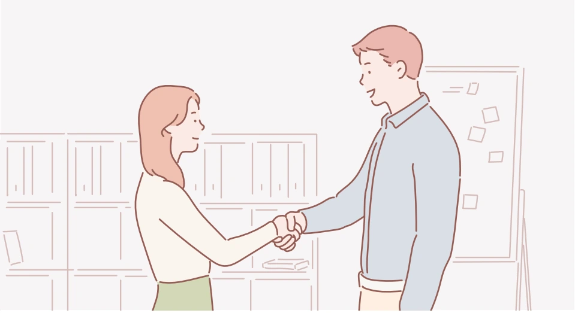

기본 수칙
- ‘내가 먼저’라는 마음으로 인사합니다.
- 상대와 눈을 맞추고 밝은 표정으로 인사합니다.
- 인사를 생략하지 않고 상황에 맞게 합니다.

상황별 인사
출근·퇴근
밝게 눈을 맞추고, 상대가 먼저 인사하면 반드시 답합니다. 상사보다 먼저 퇴근할 때는 다가가 인사합니다.
안녕하세요. / 좋은 아침입니다.
먼저 퇴근하겠습니다. / 내일 뵙겠습니다.
먼저 퇴근하겠습니다. / 내일 뵙겠습니다.
조용한 공간·여러 번 마주칠 때
도서관·회의실·화장실 등에서는 목례합니다. 하루에 여러 번 마주칠 때도 목례로 인사합니다.
급한 상황·좁은 공간
급히 지나치거나 엘리베이터 등 좁은 공간에서는 15도 정도의 약례가 적당합니다. 큰 소리의 인사는 자제합니다.
깊은 감사·사죄·중요 고객
두 손을 앞으로 가지런히 모으거나 옆에 두고 45도로 허리를 숙여 정중한 마음을 전합니다.
대단히 감사합니다. / 대단히 죄송합니다. / 처음 뵙겠습니다.